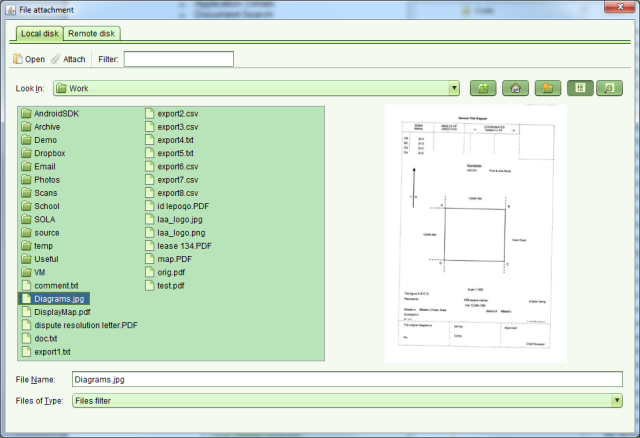
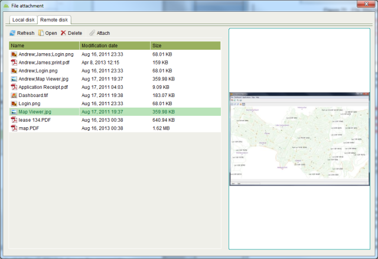

To attach a file to a new document, click the “...” button in the Attachment text field. The File Attachment dialog will display and you will be able to use it to select a file from your local computer file system or the remote file location configured for Registry.

File Attachment Local disk tab
The File Attachment dialog will show a thumbnail preview for standard image formats (png,
tiff, jpg) as well as PDF files. If your folder has a large number of documents, type the
name of the file you want in the Filter text box to restrict which files are shown. If you
need to view the content of a file, select the file and click  Open.
Open.

File Attachment Remote disk tab
The Remote disk view displays files that have been placed in a specific network file system location e.g. the output folder configured for a network attached scanner. Thumbnail previews are supported for standard image formats (png, tiff, jpg) as well as PDF.
Once you have chosen the document to attach, click the Attach button on the
appropriate tab of the File Attachment dialog. This will return you to the Documents tab (or
screen) and the filename of the attachment will be display in the Attachment text field along
with a
Attach button on the
appropriate tab of the File Attachment dialog. This will return you to the Documents tab (or
screen) and the filename of the attachment will be display in the Attachment text field along
with a  remove icon. If you select the wrong file as the attachment, you can
click the remove icon to remove the file attachment.
remove icon. If you select the wrong file as the attachment, you can
click the remove icon to remove the file attachment.